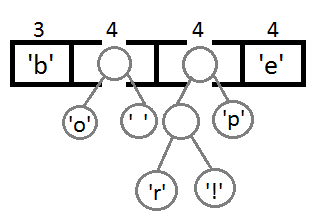
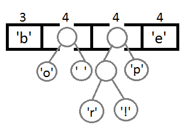

3. Неравномерное кодирование
Неравномерный код
Неравномерным кодом называется такой код, который формирует кодовые комбинации разной длины.
Использование неравномерного кодирования сильно упрощает жизнь тогда, когда требуется максимальная экономия места. Впрочем, ошибки в неравномерном коде недопустимы от слова совсем. Так, если в коде будет допущена хотя бы одна ошибка, то с огромной вероятность восстановить всю следующую последовательность будет невозможно, из-за чего всё сообщение будет утеряно.
Разберем пару алгоритмов неравномерного кодирования сообщений.
1. Алгоритм Хаффмана.
Алгоритм Хаффмана
Алгоритм Хаффмана — жадный алгоритм оптимального префиксного кодирования алфавита с минимальной избыточностью.
Этот алгоритм был разработан Дэвидом Хаффманом в 1952 году при написании им курсовой работы. В настоящее время он используется во многих программах сжатия данных.
Сам метод состоит из двух этапов: построение оптимального кодового дерева и построение отображения код-символ на основе построенного дерева.
Итак, у нас есть строка: "beep boop beer!". В текущем виде она занимает 120 бит (по 8 бит на каждый символ). После кодирования строка займёт 40 бит.
Чтобы получить код для каждого символа на основе его частотности, нам надо построить бинарное дерево, такое, что каждый лист этого дерева будет содержать символ (печатный знак из строки). Дерево будет строиться от листьев к корню, в том смысле, что символы с меньшей частотой будут дальше от корня, чем символы с большей. Скоро вы увидите, для чего это нужно.
Чтобы построить дерево, мы воспользуемся слегка модифицированной очередью с приоритетами — первыми из неё будут извлекаться элементы с наименьшим приоритетом, а не наибольшим. Это нужно, чтобы строить дерево от листьев к корню.
Для начала посчитаем частоты всех символов:
| Символ | Частота |
|---|---|
| 'b' | 3 |
| 'e' | 4 |
| 'p' | 2 |
| '' | 2 |
| 'o' | 2 |
| 'r' | 1 |
| '!' | 1 |
После вычисления частот создадим узлы бинарного дерева для каждого знака и добавим их в очередь, используя частоту в качестве приоритета:
 Теперь достаем два первых элемента из очереди и связываем их, создавая новый узел дерева, в котором они оба будут потомками, а приоритет нового узла будет равен сумме их приоритетов. После этого добавим получившийся новый узел обратно в очередь.
Теперь достаем два первых элемента из очереди и связываем их, создавая новый узел дерева, в котором они оба будут потомками, а приоритет нового узла будет равен сумме их приоритетов. После этого добавим получившийся новый узел обратно в очередь.
 Последовательно повторяя те же шаги, получим (не торопитесь и тщательно обработайте эту информацию):
Последовательно повторяя те же шаги, получим (не торопитесь и тщательно обработайте эту информацию):
 


 После того, как мы свяжем два последних элемента, получится итоговое дерево:
После того, как мы свяжем два последних элемента, получится итоговое дерево:
 Теперь, чтобы получить код для каждого символа, надо просто пройтись по дереву и для каждого перехода добавлять 0, если идём влево, и 1 - если вправо:
Теперь, чтобы получить код для каждого символа, надо просто пройтись по дереву и для каждого перехода добавлять 0, если идём влево, и 1 - если вправо:
 Если мы так сделаем, то получим следующие коды для символов:
Если мы так сделаем, то получим следующие коды для символов:
| Символ | Код |
|---|---|
| 'b' | 00 |
| 'e' | 11 |
| 'p' | 101 |
| '' | 011 |
| 'o' | 010 |
| 'r' | 1000 |
| '!' | 1001 |
Чтобы расшифровать закодированную строку, нам надо, соответственно, просто идти по дереву, сворачивая в соответствующую каждому биту сторону до тех пор, пока мы не достигнем листа. Например, если есть строка «101 11 101 11» и наше дерево, то мы получим строку «pepe».
Важно иметь в виду, что каждый код не является префиксом для кода другого символа. В нашем примере, если 00 — это код для 'b', то 000 не может оказаться чьим-либо кодом, потому что иначе мы получим конфликт. Мы никогда не достигли бы этого символа в дереве, так как останавливались бы ещё на 'b'.
На практике, при реализации данного алгоритма сразу после построения дерева строится таблица Хаффмана. Данная таблица, по сути, — связный список или массив, который содержит каждый символ и его код, потому что это делает кодирование более эффективным. Довольно затратно каждый раз искать символ и одновременно вычислять его код, так как мы не знаем, где он находится, и придётся обходить всё дерево целиком. Как правило, для кодирования используется таблица Хаффмана, а для декодирования — дерево Хаффмана.
Входная строка: «beep boop beer!»
Входная строка в бинарном виде: «0110 0010 0110 0101 0110 0101 0111 0000 0010 0000 0110 0010 0110 1111 0110 1111 0111 0000 0010 0000 0110 0010 0110 0101 0110 0101 0111 0010 0010 000»
Закодированная строка: «0011 1110 1011 0001 0010 1010 1100 1111 1000 1001»
Как вы можете заметить, между ASCII-версией строки и закодированной версией существует большая разница.
2. Алгоритм Шеннона-Фано.
Этот алгоритм имеет больше сходство с алгоритмом Хаффмана, которыый появился на несколько лет позже. Алгоритм также использует коды переменной длины: часто встречающийся символ коируется кодом меньшей длины, редко встречающийся - кодом большей длины. Эти коды также префиксные, то есть никакое кодовое слово не является префиксом любого другого. Именно это свойство позволяет однозначно декодировать любую последовательность кодовых слов.
Алгоритм назван в честь Шеннона и Фано, потому что был разработан ими независимо друг от друга. Шеннон опубликовал его в "Математической теории связи", а Фано - просто в техническом отчёте.
Состоит из 4 основных этапов:
- Символы первичного алфавита выписывают по убыванию вероятностей.
- Символы полученного алфавита делят на две части, суммарные вероятности символов которых максимально близки друг другу. Так, две части таблицы по вероятностям должны быть примерно равны друг другу.
- В префиксном коде для первой части алфавита присваивается "0", второй части - "1".
- Полученные части рекурсивно делятся, их частям назначаются цифры согласно предыдущему пункту.
Код Шеннона — Фано строится с помощью дерева. Построение этого дерева начинается от корня. Всё множество кодируемых элементов соответствует корню дерева (вершине первого уровня). Оно разбивается на два подмножества с примерно одинаковыми суммарными вероятностями. Эти подмножества соответствуют двум вершинам второго уровня, которые соединяются с корнем. Далее каждое из этих подмножеств разбивается на два подмножества с примерно одинаковыми суммарными вероятностями. Им соответствуют вершины третьего уровня. Если подмножество содержит единственный элемент, то ему соответствует концевая вершина кодового дерева; такое подмножество разбиению не подлежит. Подобным образом поступаем до тех пор, пока не получим все концевые вершины. Ветви кодового дерева размечаем символами 1 и 0, как в случае кода Хаффмана.
При построении кода Шеннона — Фано разбиение множества элементов может быть произведено, вообще говоря, несколькими способами. Выбор разбиения на уровне n может ухудшить варианты разбиения на следующем уровне (n + 1) и привести к неоптимальности кода в целом. Другими словами, оптимальное поведение на каждом шаге пути ещё не гарантирует оптимальности всей совокупности действий. Поэтому код Шеннона — Фано не является оптимальным в общем смысле, хотя и дает оптимальные результаты при некоторых распределениях вероятностей. Для одного и того же распределения вероятностей можно построить, вообще говоря, несколько кодов Шеннона — Фано, и все они могут дать различные результаты. Если построить все возможные коды Шеннона — Фано для данного распределения вероятностей, то среди них будут находиться и все коды Хаффмана, то есть оптимальные коды.
Ниже приведем простой пример кодового дерева.
Исходные символы:
- A (частота встречаемости: 50)
- B (частота встречаемости: 39)
- C (частота встречаемости: 18)
- D (частота встречаемости: 49)
- E (частота встречаемости: 35)
- F (частота встречаемости: 24)
Полученный код: A — 11, B — 101, C — 100, D — 00, E — 011, F — 010.
Кодирование Шеннона — Фано является достаточно старым методом сжатия, и на сегодняшний день оно не представляет особого практического интереса. В большинстве случаев длина последовательности, сжатой по данному методу, равна длине сжатой последовательности с использованием кодирования Хаффмана. Но на некоторых последовательностях могут сформироваться неоптимальные коды Шеннона — Фано, поэтому более эффективным считается сжатие методом Хаффмана.
Оба рассмотренных выше алгоритма используются в т.ч. и для архивации данных, т.е. сжатия.
Звучит оно примерно так: "Никакое кодовое слово не может быть началом другого кодового слова".
Отдельно стоит упомянуть условие Фано, имеющее непосредственное отношение к понятию неравномерного кодирования.
Условие Фано
Это условие хорошо заметно в описанных выше алгоритмах, которые являются префиксными. А ещё это условие часто встречается в ЕГЭшных задачах...
Стоит упомянуть, что это условие всегда соблюдается в равномерном кодировании, что, впрочем, очень даже логично.
Примером кода, удовлетворяющего условию Фано, являются телефонные номера в традиционной телефонии. Если в сети существует номер 101, то номер 1012345 не может быть выдан: при наборе трёх цифр АТС прекращает понимать дальнейший набор и соединяет с адресатом по номеру 101. Однако в сотовой телефонной сети это правило уже не действует, поскольку требуется завершение последовательности знаков соответствующей кнопкой (обычно — с изображением зелёной трубки), при этом 101, 1010 и 1012345 могут одновременно пониматься как разные адресаты.
 Слева направо степень сжатия изображения уменьшается, вы можете заметить, что оно становится чётче.
Слева направо степень сжатия изображения уменьшается, вы можете заметить, что оно становится чётче.